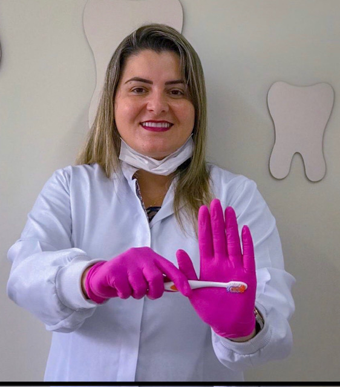
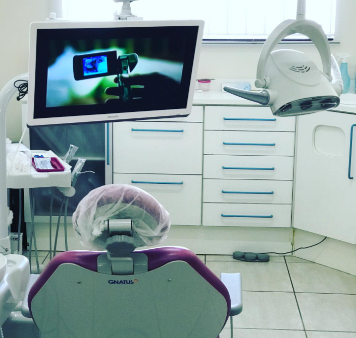

Bem-vindo ao consultório da Dra. Mabelin, dentista em Uberlândia. Oferecemos atendimento de excelência para crianças, adolescentes e adultos, com um soluções completas em odontologia: aparelhos modernos, clareamento dental, limpeza profissional e tratamento de cáries. Cuidamos da saúde e da estética para toda a família.

Oferecemos uma completa gama de serviços odontológicos para crianças, adolescentes e toda a família
Soluções modernas em ortodontia com aparelhos de última geração, invisalign e acompanhamento completo durante o tratamento.
Limpeza completa dos dentes com remoção de placa e tártaro, seguindo os padrões de higiene mais rigorosos.
Diagnóstico precoce e tratamento compassivo de cáries para manter os dentes saudáveis desde a infância.
Orientações sobre higiene bucal, alimentação saudável e acompanhamento regular para garantir dentes fortes e saudáveis.
Emergências odontológicas com atendimento rápido e eficiente para alívio de dor e tratamentos urgentes.
Toda a família bem-vinda! Tratamentos para crianças, adolescentes, adultos e idosos em um único local.
A Dra. Mabelin possui ampla experiência no atendimento a crianças, adolescentes e adultos.
Utilizamos a tecnologia mais avançada em odontologia para garantir precisão e conforto.
Tratamos cada paciente com carinho e paciência, criando um ambiente acolhedor e seguro.
Focamos em resultados duradouros e acompanhamento contínuo da saúde bucal.

Veja o que nossos pacientes dizem sobre o atendimento da Dra. Mabelin
"A Dra Mabelin é uma profissional excelente! Sempre prestativa e educada. Sabe muito sobre ortodontia. Muito atualizada com o que mais moderno tem no mercado. Cuida dos meus filhos desde pequenos. Os dentes deles ficaram lindos. E ainda é daquelas profissionais que não fica enrolando só pra ganhar mais dinheiro. Ela é rápida e eficaz! Super recomendo!"
Mãe dos pacientes
"A dra. Mabelin é uma profissional muito competente, atualizada e bastante atenciosa. Super recomendo! Toda a minha família se trata com ela."
"Excelente profissional!! Muito atenciosa e dedicada, além de atender em horários super flexíveis. Recomendo."
Venha nos visitar em nosso consultório em Uberlândia, MG.
Endereço: R. Ten. Virmondes, 863 - Centro, Uberlândia - MG, 38400-104
Estamos localizados no coração de Uberlândia, com fácil acesso e estacionamento próximo.
Agende sua consulta agora mesmo! Envie uma mensagem pelo WhatsApp e escolha o melhor horário para você.
Agendar Consulta via WhatsApp